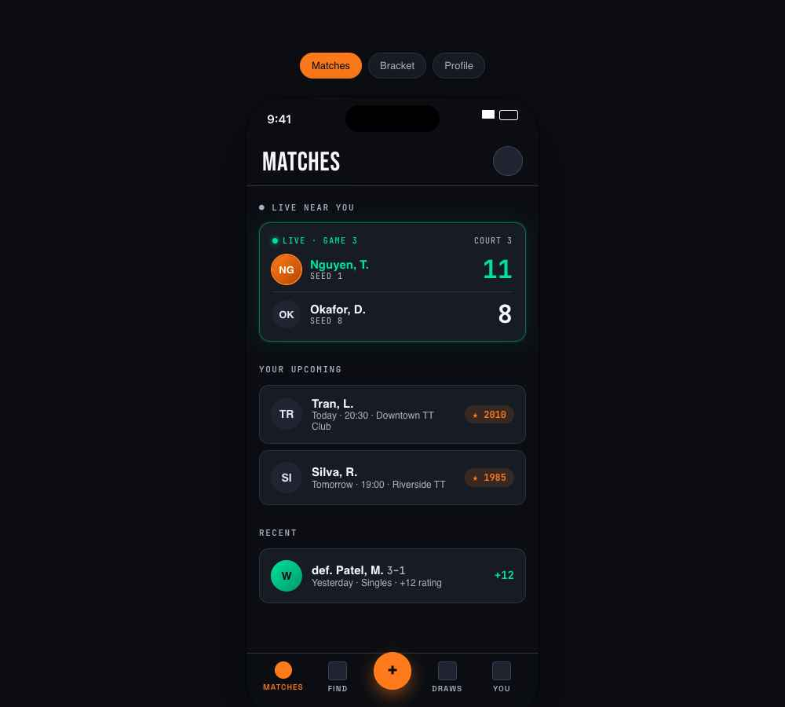
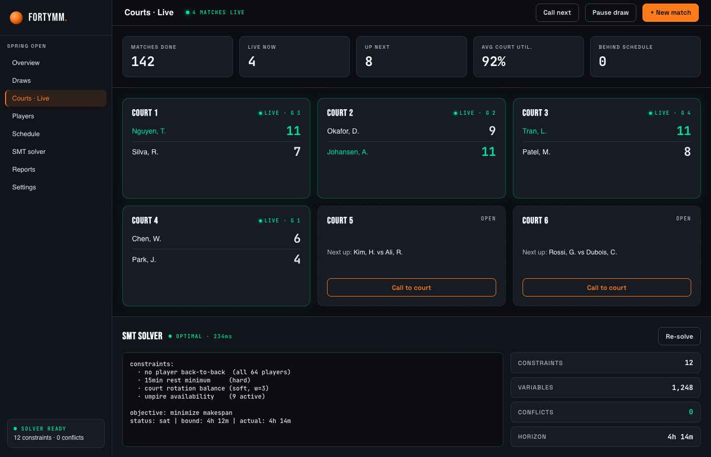
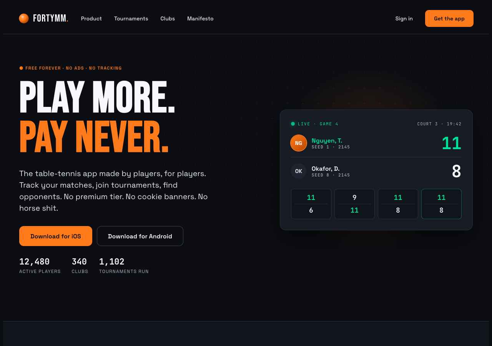

The system now aims to feel like dependable club equipment. Same name, same orange, same dark palette and big scores — with the decoration removed so the match is the first thing you see.
Buttons, focus, links and the selected tab. It no longer marks live matches, rating chips, headings or bullets, so it always points at the next action.
Live is a static red dot and the word "Live". The server has a white ball. Winners are bold, losers step back to grey. Ratings use ▲ green / ▼ neutral. Conflicts are amber with a fix attached.
v1 marked a winning live player with a green border, glow, gradient avatar, green name and green score. v2 uses one marker per state, so the score and names stay the loudest things.
Removed pulsing dots, hover lift, glow-on-hover and the bounce curve. Kept a 100ms press, a 160ms state change and a single 600ms flash on the number that changed. Reduced motion is honoured globally.
Space Grotesk for every label and heading, in sentence case at 13px or larger. Mono only where digits align. Bebas is limited to the wordmark and venue scoreboards.
Expected finish, decisions to make, free tables, rest and the schedule come first. Solver statistics moved into a collapsed "Scheduling details" section.
Lists use divider rows. Panels appear only where things belong together. There is one shadow, for floating UI.
The hero says what you can do. "Free, no ads, no tracking" is stated once, as a fact. The manifesto, numbering and cheeky asides are gone.



--shadow-glow, --shadow-live-glow, --shadow-sm/md/lg.fortymm-grid-bg, .ball-dot, @keyframes ball-pulse--ease-snap, --ease-in-out, --dur-slow.overline and 10–11px tracked labels--s-10 as a "40mm" brand rule--serve-*, --win (green no longer means both live and winning)--accent, --accent-soft, --accent-text, --focus-ring--live, --serving, --winner, --loser, --rating-up, --rating-down, --conflict, --rest.live-marker, .serve-marker, .rating-up, .rating-down, .label--dur-press, --dur-change, --dur-score, .score-updated--shadow-overlay (the only shadow)prefers-reduced-motion rule